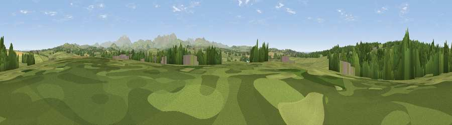

Viewpoint near Great Broughton
#21926 in England · top 82% of its area beats it · near Great BroughtonThe view, rendered

A 360° render of this exact spot computed from the terrain model, tree cover and land cover — summer colours, afternoon light, calibrated against photographs of famous viewpoints. Real trees, hedges and buildings will differ in detail.
The panorama
Grey silhouette: terrain skyline in each direction (720 bearings, Earth curvature and refraction included). Dashed green: skyline with trees (+15 m) and buildings (+8 m) as obstacles. Blue strip: how far the ground is visible on each bearing.
Where the view opens
Wedge length = distance to the farthest visible ground on that bearing (vegetation-aware). Rings at 10, 25 and 50 km.
What fills the view
63% grassland · 26% woodland · 7% cropland · 2% built-up · 2% water
Angular shares of the visible panorama (visual magnitude), not map area. Landscape diversity 0.43 (0–1 Shannon).
Key numbers
More beautiful places nearby
The staircase of upgrades: each row has a higher view potential than everything closer. Driving times are estimates from straight-line distance, calibrated against real road routing — check an actual route before setting out.
| Place | Direction | Drive | Score |
|---|---|---|---|
| Viewpoint near Broughton Moor | W · 1 km | ~4 min | 58.5 |
| Viewpoint near Eaglesfield | SSE · 4 km | ~9 min | 62.3 |
| Viewpoint near Tallentire | NE · 5 km | ~11 min | 68.5 |
| Viewpoint near Birkby | NNW · 6 km | ~13 min | 72.1 |
| Viewpoint near Tallentire | NE · 6 km | ~13 min | 75.4 |
| Viewpoint near Embleton | E · 8 km | ~17 min | 76.4 |
| Moota Hill | ENE · 9 km | ~17 min | 77.3 |
| Watch Hill (Setmurthy Common) | E · 9 km | ~17 min | 77.4 |
54.67445, -3.44167 · source: osm peak · position refined by local search. Computed location — check access rights before visiting.